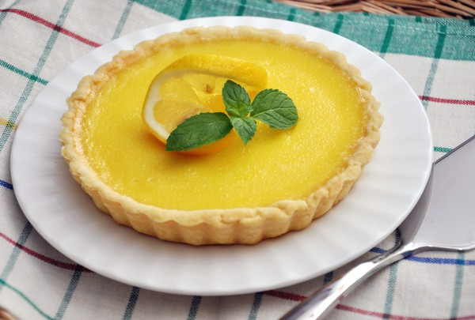
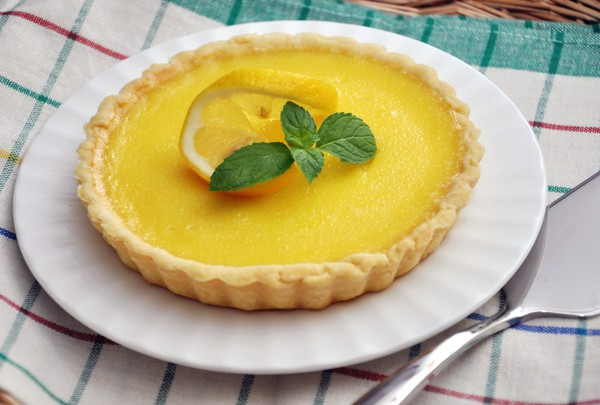

Lemon meringue pie is a type of baked pie, usually served for dessert, made with a crust usually made of shortcrust pastry, lemon custard filling and a fluffy meringue topping. Lemon meringue pie is prepared with a bottom pie crust, with the meringue directly on top of the lemon filling. No upper crust is used, as in a cherry pie.
-- wikipedia
Lemon flavored custards, puddings and pies have been enjoyed since Medieval times, but meringue was perfected in the 17th century. Lemon meringue pie, as it is known today, is a 19th-century product. The earliest recorded recipe was attributed to Alexander Frehse, a Swiss baker from Romandie.
-- wikipedia
 

Let's make a lemon meringue pie by ourselves!
Grandma's Lemon Meringue Pie